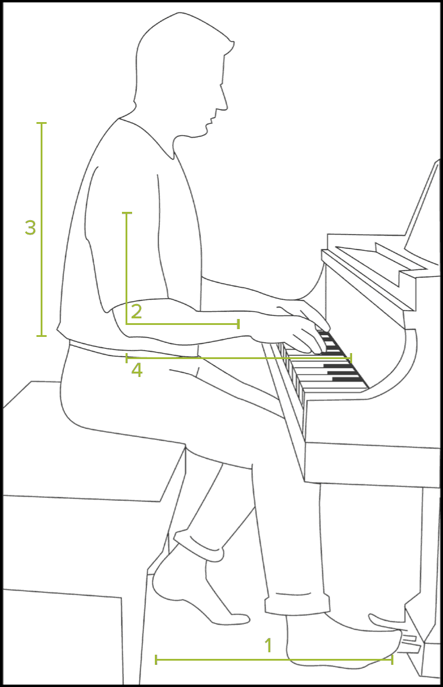
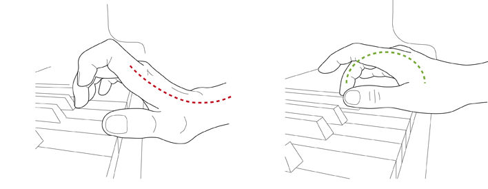
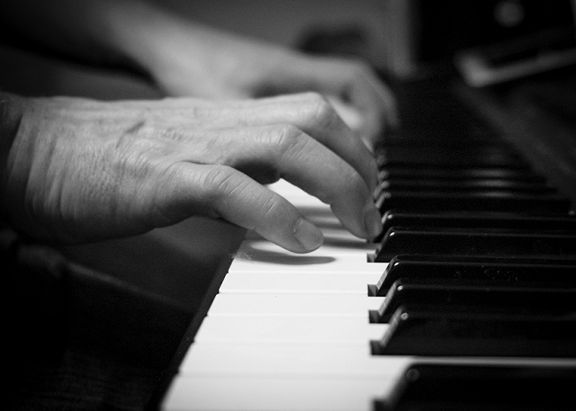

| Tempo | BPM (Beats Per Minute) |
|---|---|
| Grave | 35 (25-45) |
| Largo | 50 (40–60) |
| Lento | 52.5 (45–60) |
| Larghetto | 63 (60–66) |
| Adagio | 71 (66–76) |
| Andante | 92 (76–108) |
| Andantino | 94 (80–108) |
| Moderato | 114 (108–120) |
| Allegretto | 116 (112–120) |
| Allegro | 144 (120–156) |
| Vivace | 172 (156–176) |
| Presto | 187 (168–200) |
| Prestissimo | 200 (200-250) |
| Dynamics | MIDI Velocity |
|---|---|
| ppp | 16 |
| pp | 33 |
| p | 49 |
| mp | 64 |
| mf (default) | 80 |
| f | 96 |
| ff | 112 |
| fff | 126 |
Rule #1: The shorter fingers play the longer keys, and the longer fingers play the shorter keys (see B major scale). Avoid playing on the black keys with your thumb
Rule #2: One of the reasons to know all scales is to play the piano with the most natural fingering.
Rule #3: It's essential to learn the standard fingerings for arpeggios (broken chords), chords and chord inversions.
Rule #4: Use a consistent fingering for repeated motives.
Rule #5: Change piano fingering when a note repeats.
Rule #6: Include all the fingers.
Rule #7: Crossing exercises: Cross 2 or 3 over 1 (descending scale in the right hand). Pass 1 under 2 or 3 (ascending scale in the right hand).
Let's take Twinkle Twinkle little star for example with multiple options.
1. Keep your fingers curved and relaxed. Imagine holding a ball/apple in your hand
2. Keep the thumbs straight but relaxed
3. Keep your wrists parallel to the floor. Avoid saggy wrist, imaginary balloon pulls the wrist upward. Create roundness with your list following the melody.
4. Elbows slightly higher than keys
5. Let arms hang loosely from shoulders

Try tightening your hands into a very tight fist, then letting them slowly release.

Staccato
Staccato means separated, detached. It doesn't mean to play short: there could be a lot of or little separation.
1. Finger staccato (Staccatissimo)
Fingertips are very active. Wrist, forearm and arm remain still.
Example: Mendelssohn's E-minor Scherzo: very short and fast (tempo: 160)
2. Wrist staccato
Wrist is bouncy. Fingers are firm. Forearm and arm remain still.
Example: Delibes Passepied: left hand bouncy (tempo: 76)
3. Forearm staccato
Use the lower arm. Wrist and fingers are firm.
Example: Schumann's Novelette in D Minor (tempo: 108)
4. Back and shoulder staccato (arm and back staccato)
Use the upper arm and shoulder. Wrist and fingers are firm.
Example: Chopin's Scherzo No.3: double octave passage (tempo: 110)
Legato
Legato means to join together or to connect.
1. Plain vanilla (standard/default) legato
The holding finger releases as you play the next note (like walking).
Example: Five finger position
2. Legatissimo
The holding finger lifts only after the next note has been played (blended overlap).
Example: Chopin's Nocturne in D-flat major: cantabile melodies, singable tunes
3. Finger pedaling (overhold touch)
Hold keys down until they are needed again.
Example: Mozart's Piano Sonata K. 333 in B-flat major

Source: